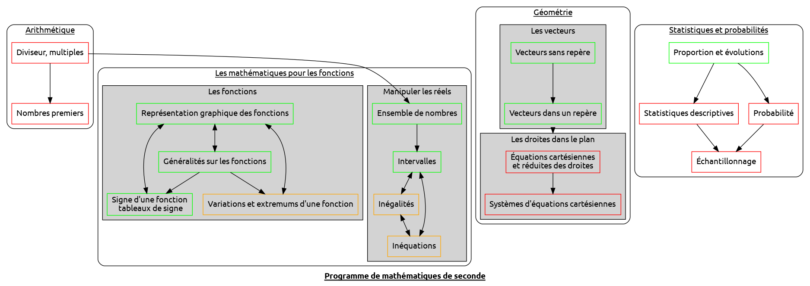

Mes tas de méta

1. Fichiers importants
2. Nombres et calculs
2.1. Notions de multiples, diviseur et de nombres premiers
2.2. Utiliser le calcul littéral (identités remarquables)
2.3. Manipuler les nombres réels
2.4. Inégalités
2.5. Intervalles
3. Géométrie
3.1. Vecteur, première partie
3.2. Vecteur, deuxième partie
3.3. Résoudre des problèmes de géométrie [0/2]
[ ]Il faut finir le cours sur le projeté orthogonal[ ]Lui trouver une application sympa
3.4. Représenter et caractériser les droites du plan [/]
4. Statistiques et probabilités
4.1. Échantillonnage
4.2. Modéliser le hasard : calculer les probabilités
4.3. Statistiques descriptives
Avec :
- Moyenne, linéarité de la moyenne
- Médiane, écart type